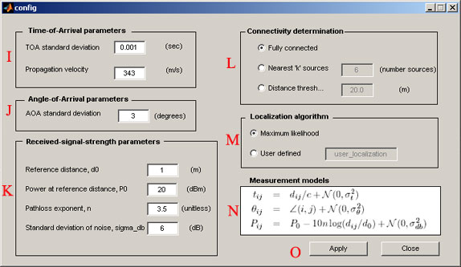

Localization GUI Help
Installation
The Localization GUI requires MATLAB version 7.x (tested for x=2) and the Optimization Toolbox to run properly. Without the Optimization Toolbox, Cramer-Rao bounds can still be calculated, but maximum likelihood estimation will not be functional. The SeNeLEx files may be extracted anywhere on the user's system. To run the program, cd into the gui directory (>>cd senelex\gui), and type "localization_gui" from the matlab commandline (>>localization_gui). Starting the program by double-clicking from either the Matlab or OS file explorer does not reliably work.
Usage
The following two figures present the two main windows of the GUI with key features marked by letters and described below.

| Point | Description |
| A | From the node selection panel the user can select whether to place arrays (sensors), sources (emitters), or co-located nodes (lo-located array and source). Once a node type is selected, they can be placed in the scene by clicking at the desired grid location (B). |
| B | The sensor scene. Nodes placed here can be edited by right clicking on them. This allows the user to set certain features of the node as known, such as the node's orientation or position. Also the scene connectivity is illustrated by blue lines connecting an array to any source that it is in range of hearing. General connectivity can be controlled from the configuration screen while individual links may be deleted or restored here from the context menu brought up by right-clicking links or nodes. |
| C | Pressing the "calculate bounds" button will calculate the Cramer Rao lower bound for the location estimates, which are drawn as 2-sigma ellipses around the nodes. The user will be prompted to set more locations known if needed. Pressing the "localize" button calculates a maximum likelihood estimate of the source locations based of off simulated arrival times, arrival angles, or signal strengths as needed. The estimates are plotted as x's in the scene. This button may be pressed several times to display several realizations simultaneously, or use "File->Localize N times..." |
| D | The zoom axes. Clicking on any node in the sensor scene will display it and any estimates associated with it in the zoom axes. |
| E | Here the user can select whether to use signal times, angles, or strengths in the localization process. This allows the user to evaluate the relative performance of the various methods as well as investigate the performance of hybrid schemes using multiple modes. The GUI enforces the requirement that at least one modality be checked. |
| F | Actual and estimated parameters pertaining to the selected node. Source nodes do not have orientations. Sensors and colocated sources do. |
| G | Statistics about the entire sensor scene. 2-sigma statistics are derived from the Cramer Rao lower bound. The absolute statistics come from actual ML estimates. Orientation errors are only available when angle information is used. |
| H | Menu Bar. Various options are available through the menu bar. In particular the configuration screen is accessed through "Config->Configure parameters..." Scenes may be saved and reloaded through the "File" menu, and all sources may be given known or unknown emission times via "Config->Mark all emission times..." option. This allows for the evaluation of TDOA versus TOA scenarios. Various viewing options are available from the "View" menu. |
| I | In this panel the user can select the standard deviation of the arrival time observations to be used when "Use time information" is checked on the main window. The propagation speed can also be changed here. For example, acoustics may use a velocity and standard deviation of 340 m/s and 1ms respectively, and an RF system may have propagation velocity 3e8 m/s with timing standard errors of 5ns. |
| J | The standard deviation of angle of arrival information. If angle information is not being used, this value is ignored. |
| K | Parameters used in the received signal strength model which uses log-distance pathloss plus log-normal shadowing as shown in panel M. These parameters are ignored if "Use RSS information" is not checked on the main window. |
| L | Connectivity determination. Here the user can select how the program determines which sources can be heard by which arrays. Fully connected means all sources are heard by all arrays. "k-sources" means that each sensor can only hear emissions from the k-nearest sources. Similarly, all sources less than a threshold distance can be heard by selecting the distance threshold option. Individual links in the connectivity graph may also be deleted by right-clicking on them in the main window. |
| M | By default SeNeLEx computes the maximum likelihood estimates of the node postiions using all available information as determined by the connectivity and measurement selection types (time, angles, and/or RSS). Alternatively, the user can define their own localization algorithm for SeNeLEx to call. This function can exist anywhere on the Matlab path. A function template is provided in senelex\engine\user_localization.m |
| N | This pannel summarizes the measurement models used in this program for arrival times, arrival angles, received signal strengths. Only a subset of these may be used depending on the selections on the main window. |
| O | Clicking "Apply" applies these settings to the nodes in the main window. "Close" closes the configuration window. |